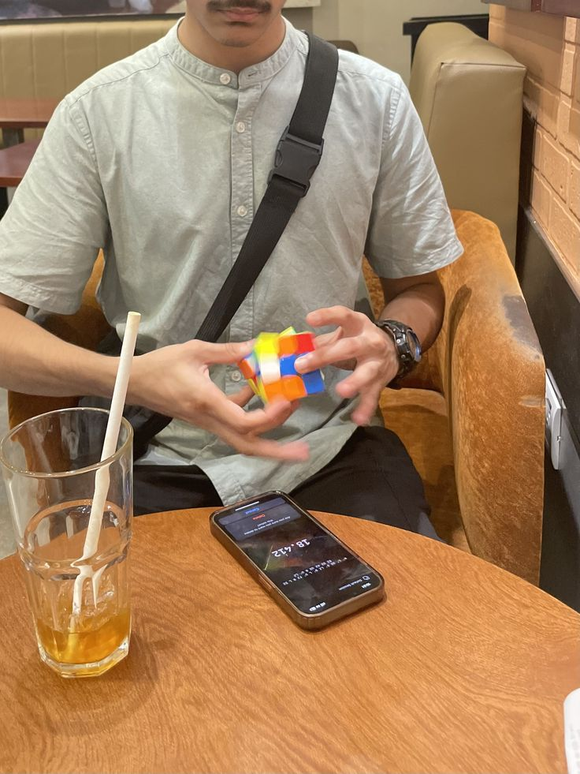
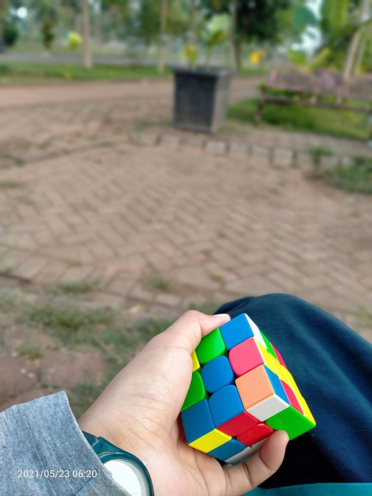
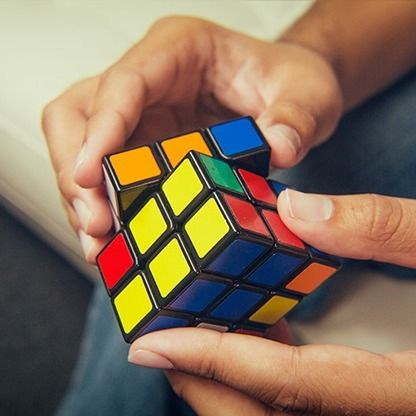
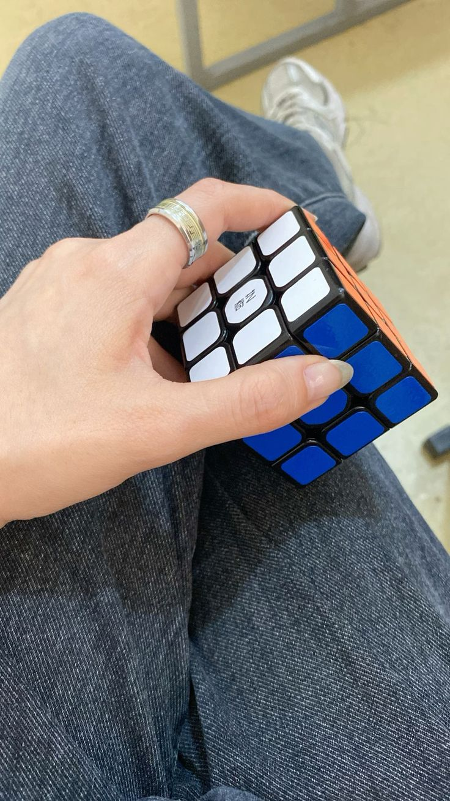
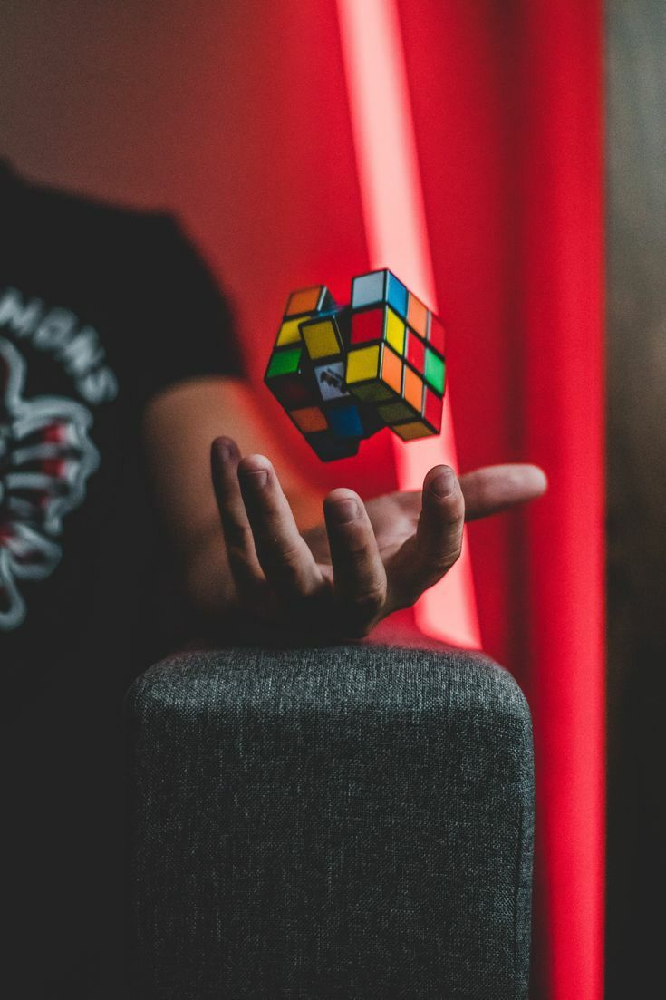

there is something deeply wrong with someone who has been cubing for years and still hasn't committed to a method fully.
i've been speedcubing long enough to know what i'm doing. long enough that the cube feels like an extension of something rather than a separate object i'm manipulating. but not long enough — or maybe just not committed enough — to pick a lane and stay there.
cfop is the obvious choice. it's what everyone learns. layer by layer. intuitive. the kind of method that once you understand it, the rest is just muscle memory and finger tricks. i'm decent at cfop. consistently sub-20 when the cube cooperates. when the stars align and my hands remember what they're supposed to be doing.





but then roux started whispering at me. there's something about the m-slice flow that feels different. the way you build the blocks first and then solve the top layer using just middle layer rotations. it's less intuitive at the start. more corners to learn. more thinking. but once it clicks — and it does click if you let it — there's a fluidity to it that cfop doesn't quite have. the rotations feel smaller. the transitions feel intentional. you're not just following a sequence, you're... playing.
i picked roux up as a side thing. a distraction. something to do when cfop felt stale. and i got decent at it. not sub-20 decent, but close enough that i could see the potential. could feel what it might be like if i actually committed. but committing means letting go of cfop times. it means going slower for a while. it means choosing. and i'm apparently incapable of choosing.
so instead i sit with both. flip between them depending on my mood. neither is perfect. both feel like half-measures. someone who knows me watched me do this recently — rotating through three different cubes, switching methods every other solve — and just sat there and laughed. "you know you have to actually pick one right." i know. i'm still not doing it though.
← Back to Blog